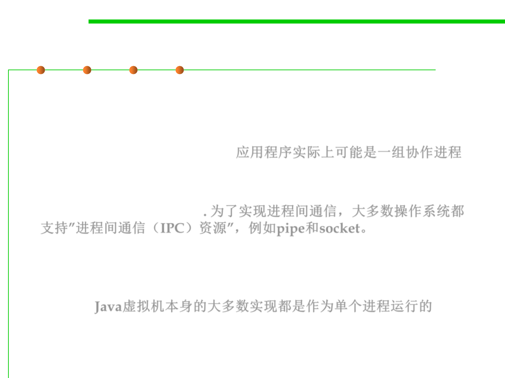

Process
10.1 Concurrency and Thread-Safety
▪ Processes are often seen as synonymous with programs or
applications.
▪ However, what the user sees as a single application may in fact be
a set of cooperating processes. 应用程序实际上可能是一组协作进程
▪ To facilitate communication between processes, most operating
systems support Inter Process Communication (IPC) resources,
such as pipes and sockets. 为了实现进程间通信，大多数操作系统都
支持”进程间通信（IPC）资源”，例如pipe和socket。
– IPC is used not just for communication between processes on the same
system, but processes on different systems.
▪ Most implementations of the Java virtual machine run as a single
process. Java虚拟机本身的大多数实现都是作为单个进程运行的
▪ A Java application can create additional processes using
a ProcessBuilder object.